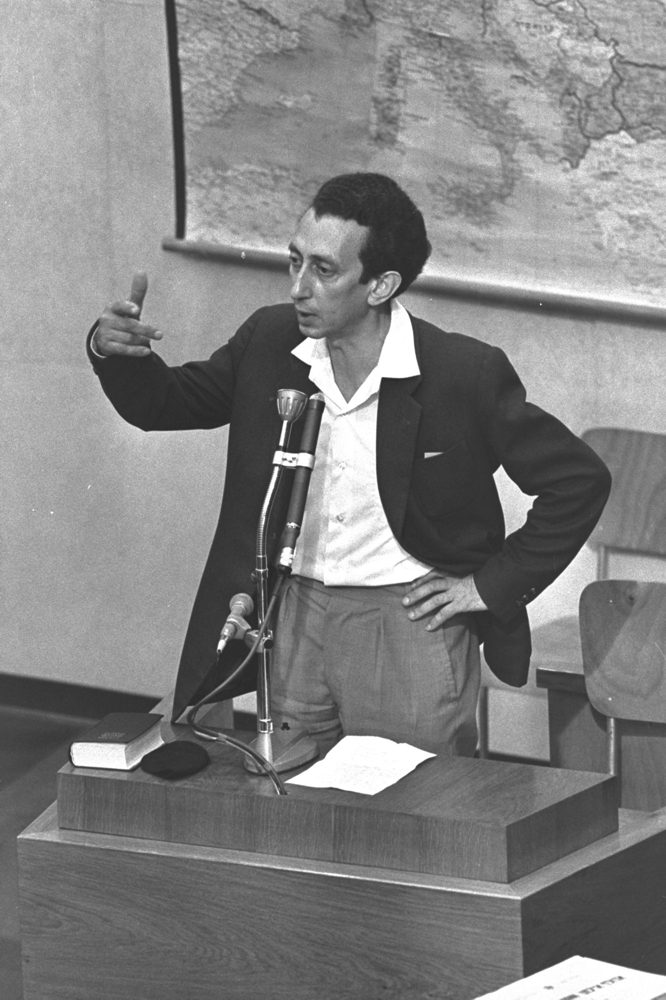
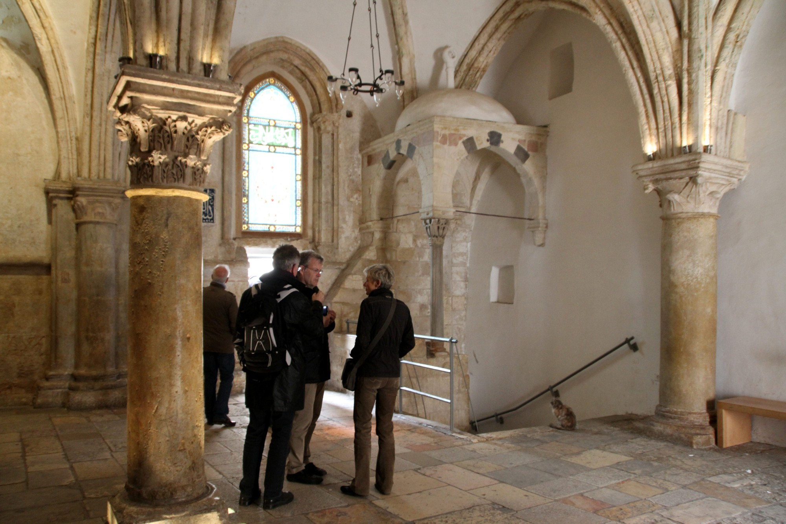

한나 아렌트의 『예루살렘의 아이히만』은 나치 전범 아돌프 아이히만의 재판을 다룬 책으로, 오늘날까지도 악(惡)에 대한 깊은 통찰을 제공하는 고전으로 평가받습니다. 성도로서 이 책을 접할 때, 우리는 단순히 역사적 사건을 넘어 인간 본성과 신앙적 책임에 대해 성찰하게 됩니다.
아이히만 재판과 ‘악의 평범성’
아돌프 아이히만은 나치 독일 시절 유대인 학살을 조직적으로 집행한 인물입니다. 전쟁 후 아르헨티나에서 도피 생활을 하다가 이스라엘 정보기관에 의해 체포되었고, 1961년 예루살렘에서 재판을 받았습니다. 한나 아렌트는 이 재판을 직접 참관하며 기록한 내용을 바탕으로 책을 썼습니다.

아렌트는 아이히만을 괴물 같은 광신자가 아니라, 명령에 순응하며 자신의 행위에 대해 깊이 생각하지 않은 평범한 관료로 묘사했습니다. 여기서 ‘악의 평범성(banality of evil)’이라는 개념이 탄생했습니다. 이는 거대한 악행이 반드시 극단적인 악의(惡意)에서 나오는 것이 아니라, 타인의 입장을 헤아리지 못하고 자신의 행위를 성찰하지 않는 ‘생각의 무능력’에서 비롯될 수 있다는 통찰입니다.
다만 이 해석이 마지막 결론은 아닙니다. 베티나 슈탕네트의 『예루살렘 이전의 아이히만』은 아르헨티나 시절의 글과 인터뷰 등을 바탕으로, 아이히만이 나치 이념에 동의하고 이를 적극적으로 실행한 인물이었으며 재판정에서는 연기와 기만에도 능했다고 주장합니다. 이 책을 소개한 서평(기독교윤리실천운동)은 제목에서 아렌트의 ‘평범성’과 대비하여 ‘악의 비범성’이라는 표현을 사용합니다. 악의 본질을 둘러싼 논의가 지금도 이어지고 있음을 보여 주는 대목입니다.
신앙인에게 주는 메시지
이 개념은 성도들에게 특별한 울림을 줍니다. 성경은 끊임없이 우리에게 타인의 처지를 돌아보고, 자신의 행동을 성찰하라고 권면합니다. 아이히만의 사례는 신앙과 윤리적 성찰이 결여될 때, 평범한 사람도 거대한 악에 가담할 수 있음을 경고합니다.
동시에 슈탕네트의 연구는 또 다른 질문을 던집니다. 악이 ‘생각 없음’에서만 오는 것이 아니라 분명한 신념과 의지에서도 올 수 있다면, 우리는 자신의 신념 또한 하나님 앞에서 끊임없이 검증받아야 합니다. 생각하지 않는 순응도, 생각한 끝에 선택한 악도 모두 우리를 경계하게 합니다.
생각하는 신앙, 성찰하는 삶

씨네21의 기사에서도 다루었듯, 영화 〈아이히만 쇼〉는 이 재판 과정을 재조명하며 악의 평범성이라는 개념을 대중에게 다시 환기시킵니다. 성도로서 우리는 이러한 역사적·철학적 논의를 통해 신앙의 본질을 다시 생각해볼 수 있습니다.
생각하기를 멈추고 체제나 관습, 명령에 무비판적으로 순응하는 삶은 선한 신앙인의 모습과 거리가 멉니다. 오히려 하나님 앞에서 끊임없이 자신의 행위와 그 결과를 돌아보고, 이웃의 처지에 공감하려는 노력이야말로 참된 신앙의 자세일 것입니다.
나가며
『예루살렘의 아이히만』은 단순한 역사서가 아니라, 우리 각자의 삶 속에서 ‘생각 없음’이 얼마나 위험할 수 있는지를 성찰하게 하는 책입니다. 성도로서 우리는 날마다 깨어 생각하고, 타인의 아픔에 귀 기울이며, 자신의 행위를 돌아보는 삶을 살아가야 할 것입니다. 이것이야말로 악의 평범성에 대한 가장 확실한 신앙적 응답이 아닐까 생각합니다.
오늘 나는 누구의 명령과 어떤 관습 앞에서, 생각하기를 멈추고 있지는 않습니까?
참고 출처
- 예루살렘의 아이히만 - 위키백과
- 악의 평범성 - 위키백과
- [책 소개] 『예루살렘 이전의 아이히만』, 악의 비범성에 대하여(홍종락) - 기독교윤리실천운동
- [다시 읽는 명저] ‘악의 평범성’이란 개념으로 ‘생각의 무능력’ 비판 - 한국경제
- [알고 봅시다] ‘악의 평범성’ 개념으로 본 〈아이히만 쇼〉의 아돌프 아이히만 - 씨네21